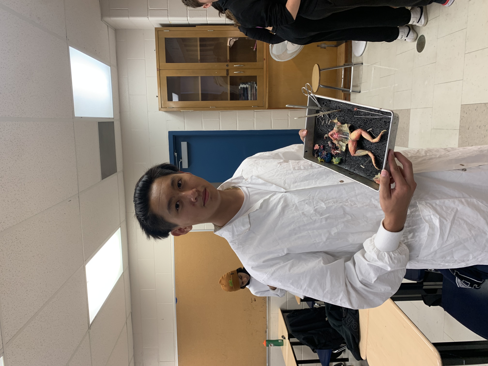
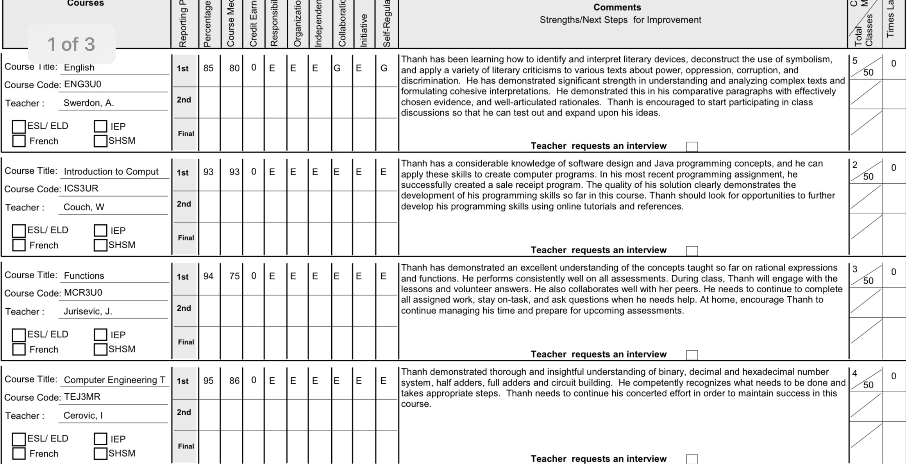
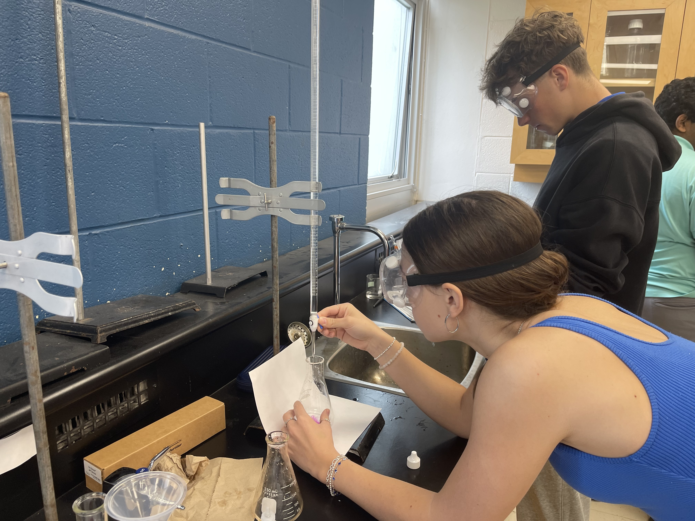

📘 Grade 9 — What Boils Water Better Lab
For this lab, our goal was to find out what conditions would make water boil the fastest. I tested three things: using a lid or not, the type of pot (metal vs. glass), and how much water was in the pot. I timed how long it took for each setup to start boiling.I discovered that using a lid made the water boil much faster because it trapped the heat. I was surprised to see how the material of the pot made a big difference too—metal boiled faster than glass. Even the amount of water changed how fast it would boil. This showed me that every small change can affect the results in science.The biggest challenge was keeping track of all the times and making sure I used the same temperature on the stove every time. I also had to be careful not to change more than one thing at a time so the test could be fair. I learned how important it is to control your variables and take careful measurements.Doing this experiment helped me see how heat energy works in real life. It was fun to run the tests and record the results, and it made me more interested in learning about heat, energy, and how it all connects to machines and engineering.

📙 Grade 10 — Frog Disection Lab
This was one of the most memorable and challenging labs of the year. At first, I felt a bit uncomfortable with the idea of dissecting a real animal, but once I got started, I became really engaged in understanding how the body systems work together.The goal was to identify and study the major organs inside the frog and compare them to human anatomy. I carefully followed all the safety procedures, wore gloves, and used the dissection tools properly. Once the skin was opened, I could clearly see the organs like the liver, heart, stomach, and intestines. What fascinated me the most was how compact and efficient the frog’s internal system was.The most challenging part was removing the organs cleanly so they could be observed clearly without damaging them. It took patience and steady hands, but I was proud of how precise I became by the end of the lab. I was also surprised at how strong the frog’s muscles were, and how small but intricate everything inside was.This lab taught me not only biology, but it also made me appreciate the complexity of living systems and how engineering often mimics nature’s designs. It helped me become more comfortable with hands-on scientific investigation and made me more interested in biological applications of engineering. This Lab caused me to switch from physics and becoming an engineer to joining grade 11 biology in grade 12 and having my sights on becoming doctor.


📕 Grade 11 — Titration of Acetic Acid Lab
I really enjoyed performing the actual titration—watching the pink endpoint appear was so satisfying. The most challenging part was making sure each trial was consistent, which meant being meticulous. I chose this project because I wanted to improve my lab precision and understand real-world chemical analysis. I learned that scientific accuracy requires practice and patience. I also gained confidence in using lab equipment and interpreting data through calculations.
📗 Grade 12 — Acid-Base Titration of a Polyprotic Acid Lab
In Grade 11, I first performed the titration of acetic acid with sodium hydroxide, and I remember the solution turning a dark pink—a sign I had overshot the endpoint. By Grade 12, I had refined my technique, confidently achieving a very pale pink, which indicated a precise titration. This project became one of my favorites because I could clearly observe the titration curve's equivalence point, making data analysis much more meaningful. The most challenging part was selecting the appropriate indicator and interpreting the curve correctly, especially understanding the subtle changes near the endpoint. I chose this experiment to deepen my chemistry knowledge in preparation for university, and through it, I learned how to distinguish between monoprotic and polyprotic acids, and how buffer regions help stabilize pH.
